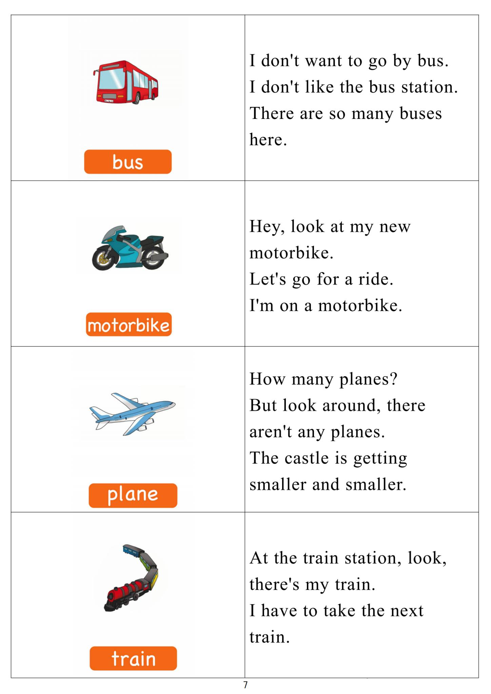

Day 6
Unit 3 · story
教材重点
网盘未提供逐日打卡原图；本级教材文件为“5.第五级单词卡.pdf”，以下重点结合单词卡与台词本整理，原文请看 Part 3。
Unit 3 · story · 7–8岁
room · white · look · like
Hello, hello, my name's Steve.
台词本为机器转写，可能存在识别误差；不等同于视频逐字原声。
详细内容
Part 1 核心词汇
必须掌握 · 4 个查看橙色每日打卡 Day 6 原图

Part 2 跟读句型与句型拓展
左侧保留台词本原句，右侧为替换练习；拓展内容不是视频逐字台词。
Hello, hello, my name's Steve.
Hello, hello, it's time to play. It's time to play in English.
Bedroom, bathroom, living room.
Kitchen and dining room.
Hey great.
Part 3 台词本全文
来源：第5级台词本 · 006.Wow!Orange - Unit 3 story_3_1a.pdf。以下保留网盘 PDF 的机器转写文本，仅清理了文件路径页眉和空行。
Hello, hello, my name's Steve.
Hello, hello, it's time to play. It's time to play in English.
Bedroom, bathroom, living room.
Kitchen and dining room.
Hey great.
Boys and girls.
That was hard work, but I finished painting my new house. Hey,
Everything is white.
Oh, I like white.
Do you like white? Yes, no, anyway, look, this is my living room.
Look, there's a sofa, an armchair and a lamp, it's my new living room. Hey, say you in me, what is it.
It's a living room, let me hear you. What is it.
It's a living room, and again, what is it.
It's a living room. Hey Tom, steve, stop shall say, sorry, maggie, sorry.
Okay, you can stay here and relax, and hey, I'll show you the kitchen. Come on, come with me.
Ah, no, this living room is boring.
Let's add lots of colours and different patterns, abracadabra, ha, ha, HA, look, look.
This is my.
Kitchen, my new, clean, white kitchen hay. So come on, say with me, what is it.
Quietly.
It's our kitchen, yeah, what is it It's our kitchen. What is it It's.
Kitchen again. What is it.
It's, ah,
Kitchen, well done, great. Let me show you another room. Hey, try to guess what it is, come on.
Okay. So what can you see?
Table chairs, cupboard. So what room is this?
Yeah, it's my dining room, so hey, say it with me, let's say it really loud. What is it.
It's a dining room. What is it.
It's a dining room, and again, what is it.
It's a dining room, well done, it's where I eat my dinner.
/
-
/5/006.Wow!Orange - Unit 3 story_3_1a.txt[2022/3/29
星期二
6:51:48]
What was that?
Oh no, it must be Maggie Magic. This can only mean trouble, oh, maggie,
Oh no, oh no.
It's now an orange kitchen with pink spots. Ah, take, do you like this.
Really, yeah, you must be crazy to like an orange kitchen with pink spots.
Oh no, what's Maggie done with the other rooms?
Singer.
Where are you.
Bush.
Hey, at least this is still white.
Oh, I think Maggie's coming, hey, hey, let's hide, hey, what room is this?
Look, there's a toilet, there's a bath, so what room is it.
Yeah, it's a bathroom, say it with me, but SH, quietly.
What is it It's a bathroom What is it.
It's a bathroom, and again, what is it.
It's a bathroom. Oh, mike is coming, let's try to catch her when she changes the colors.
Abraska, oh, ha, maggie got you, so it is you the changing the colors. Maggie, look.
I like white.
I like my white bathroom and Maggie, look what you've done to my bedroom, for example, let's go see.
Make you look, it's a green bedroom with purple strikes. I don't like it, okay, I can change, okay?
A breakage now it's a purple bedroom with green stripes. I still don't like it, break it up.
Again,
Pink with red spots.
Orange with blue zigzags, maggie Star Star, it's a bedroom, hey, say it with me, what is it.
It's a bedroom, and again, what is it It's a bedroom last time, what is it.
It's our bedroom. Oh, maggie, I don't.
Want any color I want my bedroom white to relax. Please just change everything to white, really.
Yes, maggie, everything.
OK?
You ain't naughty. Naughty.